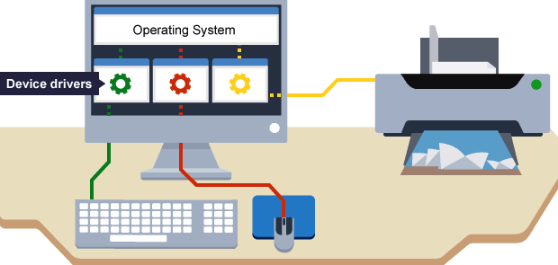

De logische laag van een apparaat bestaat uit software. Deze software zorgt ervoor dat toepassingen op het apparaat worden uitgevoerd. Bij een smartphone bestaat deze software voornamelijk uit het besturingssysteem, ofwel het operating system. Het besturingssysteem regelt de communicatie tussen de applicatiesoftware en de hardware. Daarnaast regelt het besturingssysteem de communicatie tussen onderdelen binnen de computer. De applicatiesoftware binnen de toepassingslaag moet bij alles wat hij doet, gebruik maken van het besturingssysteem. Hierdoor is de applicatiesoftware afgestemd op één specifiek besturingssysteem en kan niet functioneren in combinatie met een ander besturingssysteem.
Het besturingssysteem heeft 3 taken:
- beheer van de randapparatuur
- bestandsbeheer
- taakbeheer
Alle hardware-onderdelen die de processor ondersteunen vallen onder de randapparatuur. Het aansturen van deze hardware-onderdelen gebeurt door zogenaamde drivers, een klein programma waardoor het besturingssysteem geen kennis hoeft te hebben van alle losse onderdelen.
Je zou het misschien niet verwachten, maar alle bestanden bestaan uit nullen en enen. Deze nullen en enen worden opgeslagen op een opslagmedium. Een opslagmedium bestaat uit clusters, waar een aantal kilobyte kunnen worden opgeslagen. Als een bestand wordt opgeslagen, wordt het verdeeld in kleine stukjes, zodat de gegevens in verschillende clusters passen. Het besturingssysteem onthoudt op welke plekken van het opslagmedium de nullen en enen zijn opgeslagen en te kijken waar nog plek vrij is. Een besturingssysteem maakt naast een opslagmedium ook gebruik van een bestandssysteem. Het bestandssysteem is cruciaal voor de uitwisselbaarheid van een apparaat.
Alle taken die door een computer moeten worden uitgevoerd worden door het besturingssysteem beheert. Denk bijvoorbeeld aan multitasken, het werken met meer dan één programma tegelijkertijd. Hierbij zorgt het besturingssysteem ervoor dat de CPU zijn aandacht over de verschillende taken verdeeld.